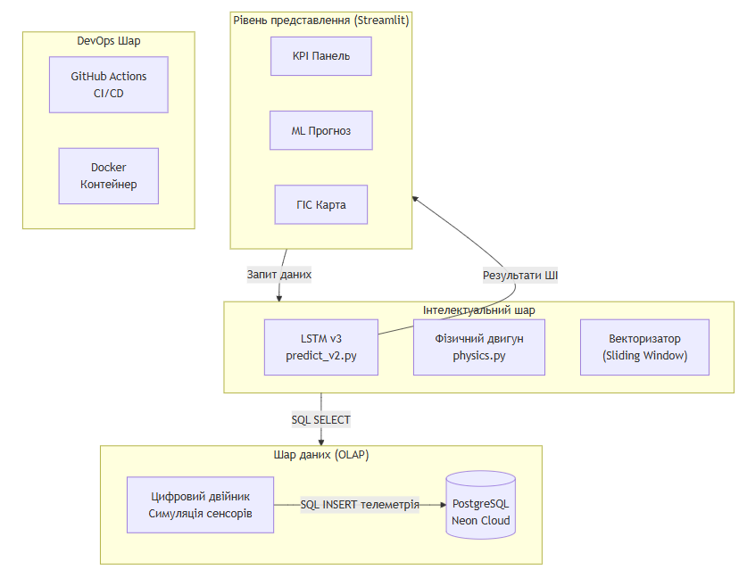
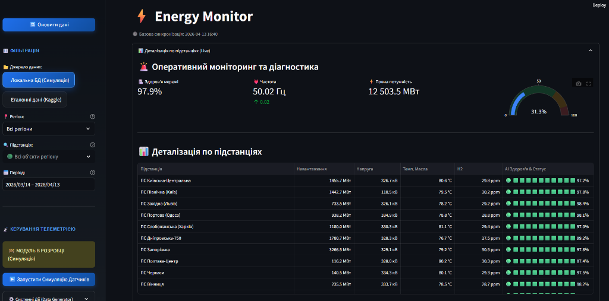
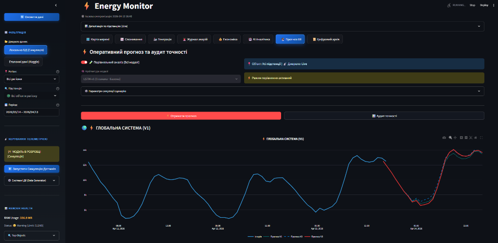
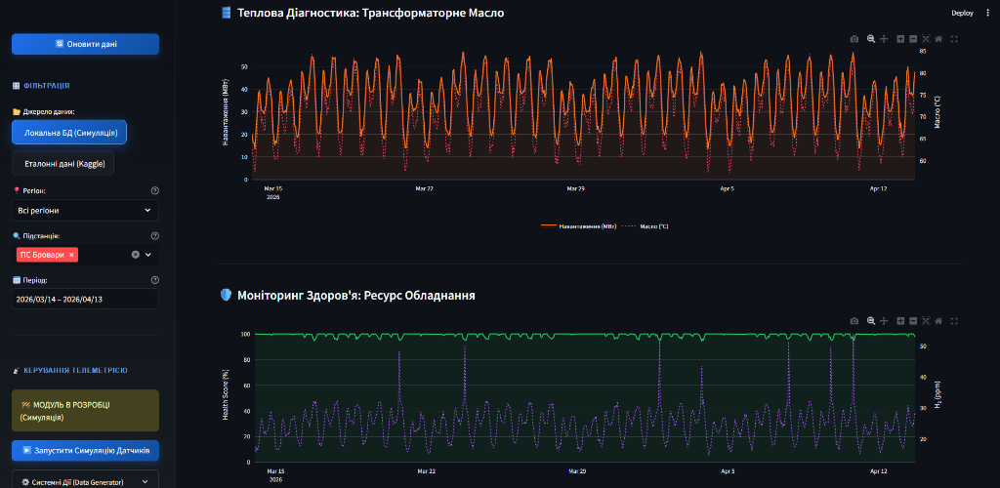
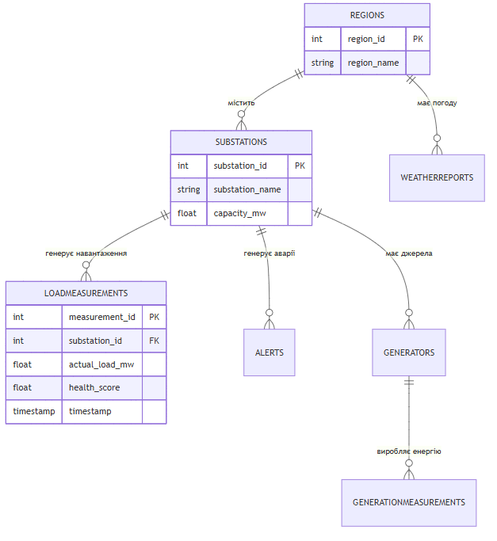
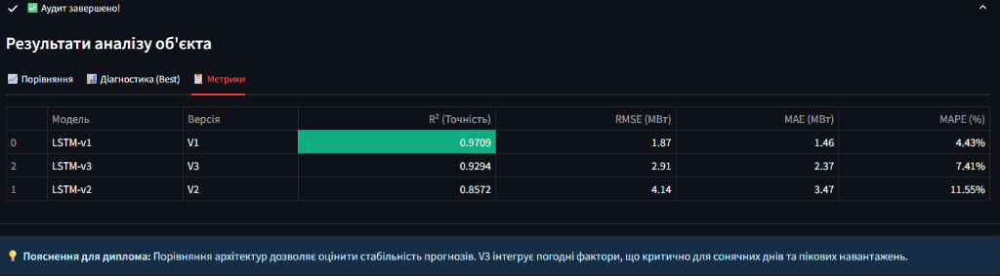
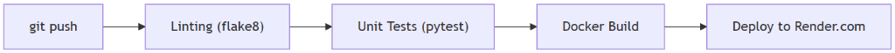

РОЗДІЛ 3. ПРОЄКТНІ РІШЕННЯ ТА ПРОГРАМНА РЕАЛІЗАЦІЯ СИСТЕМИ
3.1. Загальна архітектура та інформаційне забезпечення системи.
3.1.1. Багатошарова архітектура EnergyMonitor-OLAP.
Проєктування програмного комплексу EnergyMonitor-OLAP базується на принципах модульності та ієрархічності побудови сервісів. Для безперебійного функціонування та можливості горизонтального масштабування системи обрано чотирирівневу архітектуру, яка реалізована мовою програмування Python [1, 28] та базується на використанні прогностичної моделі LSTM [3, 11]. Логічна структура системи (схема 3.1) розділяє функціонал на рівень представлення (Streamlit), інтелектуальний шар (ML-ядро), шар даних (PostgreSQL) та DevOps-інфраструктуру.
graph TB
subgraph UI["Рівень представлення (Streamlit)"]
direction LR
A1["KPI Панель"]
A2["ML Прогноз"]
A3["ГІС Карта"]
end
subgraph CORE["Інтелектуальний шар"]
direction LR
B1["LSTM v3\npredict_v2.py"]
B3["Фізичний рушій\nphysics.py"]
B4["Векторизатор\n(Sliding Window)"]
end
subgraph DATA["Шар даних (OLAP)"]
direction LR
C1[("PostgreSQL\nNeon Cloud")]
C3["Цифровий двійник\nСимуляція сенсорів"]
end
subgraph DEVOPS["DevOps Шар"]
direction LR
D1["GitHub Actions\nCI/CD"]
D2["Docker\nКонтейнер"]
end
UI -->|"Запит даних"| CORE
CORE -->|"SQL SELECT"| DATA
C3 -->|"SQL INSERT телеметрія"| C1
B1 -->|"Результати ШІ"| UI
Рис. 3.1. Архітектурна схема системи EnergyMonitor-OLAP. Джерело: розроблено автором.3.1.2. Реалізація цифрових двійників та фізичний рушій
Ключовим компонентом системи є фізичний рушій, реалізований у модулі src/core/physics.py. Він виконує функцію цифрового двійника енергетичного обладнання, моделюючи не лише електричні параметри, а й технічний стан об'єктів.
graph TD
subgraph Local ["LOCAL ENVIRONMENT"]
DG["data_generator.py\n(Симулятор)"]
end
subgraph Cloud ["☁️ CLOUD INFRASTRUCTURE (Render)"]
DB[(PostgreSQL\nOLAP Database)]
Vect["vectorizer.py"]
Pred["predict_v2.py"]
UI["main.py\n(Dashboard)"]
end
DG ==>|"Telemetry Push"| DB
DB <-->|"Data Exchange"| Vect
Vect --> Pred
Pred --> UI Рис. 3.2. Схема розгортання та потоків даних системи.
Джерело: згенеровано автором на основі програмного коду.
Рис. 3.2. Схема розгортання та потоків даних системи.
Джерело: згенеровано автором на основі програмного коду.
Алгоритм функції calculate_transformer_health розраховує температуру масла, концентрацію розчиненого водню (\(H_2\)) та узагальнений показник стану (Health Score) на основі поточного коефіцієнта завантаження [38]. Модель враховує теплову інерцію та деградаційні процеси, що дає змогу формувати реалістичний потік телеметрії для навчання нейронної мережі (схема 3.2).
3.2. Програмна реалізація інтерфейсу користувача
3.2.1. Вибір технологічного стеку та структура навігації
Для реалізації фронтенд-частини системи обрано фреймворк Streamlit [26], який дає змогу швидко створювати інтерактивні веб-додатки для аналізу даних мовою Python. Вибір обґрунтовано наявністю вбудованої підтримки бібліотек візуалізації (Plotly, Pydeck) та високою швидкістю розробки аналітичних панелей. Структура інтерфейсу побудована за модульним принципом: бічна панель навігації (Sidebar) дає змогу перемикатися між глобальним моніторингом, прогностичною аналітикою та фінансовим аудитом. Кожен модуль є незалежним скриптом, що імпортується в головний файл main.py [4].
3.2.2. Функціональні модулі візуалізації та ГІС-карта
Головна аналітична панель відображає ключові показники ефективності (KPI) енергомережі. Інтерактивна ГІС-карта, реалізована за допомогою бібліотеки pydeck, візуалізує стан підстанцій за колірною шкалою: зелений колір відповідає завантаженню < 70%, червоний – критичному рівню > 90%. Це дає змогу диспетчеру візуально ідентифікувати проблемний вузол без необхідності ручної фільтрації таблиць.

Рис. 3.3. Головна панель моніторингу KPI системи. Джерело: розроблено автором.
Рис. 3.4. Результати прогнозування на фоні фактичних даних. Джерело: розроблено автором. Рис. 3.5. ГІС-візуалізація стану енергосистеми міського району. Джерело: розроблено автором.
Рис. 3.5. ГІС-візуалізація стану енергосистеми міського району. Джерело: розроблено автором.

Рис. 3.6. Панель діагностики технічного стану та Health Score. Джерело: розроблено автором.3.3. Структура бази даних та хмарна інтеграція
Для зберігання телеметрії використано Neon PostgreSQL, обрану через її serverless-архітектуру: обчислювальні ресурси виділяються динамічно під запит, що виключає потребу в підтримці фіксованого екземпляра БД. Взаємодія програмного коду зі сховищем реалізована через SQLAlchemy ORM, що забезпечує типізацію даних та захист від SQL-ін'єкцій.
3.3.1. Схема даних OLAP та реляційні зв'язки
Для забезпечення високої швидкості виконання аналітичних запитів база даних спроєктована за модифікованою схемою «зірка» [18]. Центральною таблицею фактів є LoadMeasurements, яка містить часові ряди навантаження та діагностичні показники (рис. 3.7).
erDiagram
REGIONS ||--o{ SUBSTATIONS : "містить"
SUBSTATIONS ||--o{ LOADMEASUREMENTS : "генерує навантаження"
SUBSTATIONS ||--o{ ALERTS : "генерує аварії"
SUBSTATIONS ||--o{ GENERATORS : "має джерела"
GENERATORS ||--o{ GENERATIONMEASUREMENTS : "виробляє енергію"
REGIONS ||--o{ WEATHERREPORTS : "має погоду"
REGIONS {
int region_id PK
string region_name
}
SUBSTATIONS {
int substation_id PK
string substation_name
float capacity_mw
}
LOADMEASUREMENTS {
int measurement_id PK
int substation_id FK
float actual_load_mw
float health_score
timestamp timestamp
}
Рис. 3.7. Схема бази даних (ER-діаграма) системи. Джерело: розроблено автором.Навколо неї розташовані таблиці-довідники: Substations (дані про підстанції), Regions (географічна прив'язка) та Generators (джерела живлення). Зв'язки між таблицями реалізовані через систему зовнішніх ключів (Foreign Keys) із каскадним оновленням даних, що гарантує цілісність інформації при видаленні або зміні об'єктів енергосистеми.
3.3.2. Оптимізація продуктивності через індексацію
Для підвищення швидкості обробки OLAP-запитів налаштовано B-tree індекси на колонках timestamp та substation_id. Це скорочує час виконання агрегаційних запитів за рахунок усунення повного перебору таблиці (full table scan) при фільтрації великих масивів історичних даних. Повна SQL-схема бази даних наведена у Додатку В, а в таблицях 3.1 та 3.2 представлено специфікацію ключових атрибутів сутностей системи.
Таблиця 3.1. Специфікація полів таблиці SUBSTATIONS (Довідник підстанцій)
| Назва поля | Тип даних | Опис | Обмеження |
|---|---|---|---|
substation_id |
SERIAL | Унікальний ідентифікатор | PRIMARY KEY |
substation_name |
VARCHAR(100) | Назва або номер об'єкту | NOT NULL |
region_id |
INTEGER | Зв'язок з регіоном | FOREIGN KEY |
capacity_mw |
FLOAT | Номінальна потужність | > 0 |
Таблиця 3.2. Специфікація полів таблиці LOADMEASUREMENTS (Телеметрія)
| Назва поля | Тип даних | Опис | Обмеження |
|---|---|---|---|
measurement_id |
BIGSERIAL | Ідентифікатор запису | PRIMARY KEY |
substation_id |
INTEGER | Ідентифікатор підстанції | FOREIGN KEY |
actual_load_mw |
FLOAT | Фактичне навантаження | NOT NULL |
health_score |
FLOAT | Показник стану (0-100) | CHECK (0-100) |
timestamp |
TIMESTAMPTZ | Часова мітка | NOT NULL |
3.4. Математичне та алгоритмічне забезпечення прогностичного ядра
3.4.1. Підготовка даних та векторизація часових ознак
У продукційній реалізації інтелектуального ядра системи використано метод ковзного вікна (Sliding Window) розміром 48 годин. Це дає змогу моделі вловлювати добову сезонність та інерційні процеси в тепловому стані обладнання. Процес векторизації у модулі src/ml/vectorizer.py включає нормалізацію даних та формування часових лагів, що дає змогу порівнювати отримані результати з альтернативними методами прогнозування, такими як ARIMA [13].
Архітектура розробленої LSTM-моделі побудована за принципом послідовного стиснення інформації. Модель складається з двох рекурентних шарів (128 та 64 нейрони відповідно) [9, 10], що дає змогу виділяти як короткострокові аномалії, так і довгострокові тренди. Остання частина архітектури – повнозв'язний шар (32 нейрони) з функцією активації ReLU для нелінійного перетворення ознак та вихідний шар (Dense), що видає фінальне значення прогнозу навантаження. Навчання проводиться з використанням оптимізатора Adam [15] та функції втрат Huber Loss [12], що забезпечує стійкість моделі до статистичних викидів у телеметрії (рис. 3.8).

Рис. 3.8. Метрики якості навчання та розподіл похибок. Джерело: розроблено автором на основі результатів навчання моделі.3.5. Моніторинг фінансових показників та технічного стану мережі
3.5.1. Модуль аналізу економічної ефективності та втрат
Для оцінки економічної доцільності функціонування енергомережі розроблено модуль фінансового моніторингу (src/ui/views/finance.py). Він інтегрує дані про споживання з динамічними тарифами, дозволяючи візуалізувати добові витрати на генерацію по регіонах. Ключовою особливістю модуля є алгоритм розрахунку технічних втрат у магістральних лініях. Програма диференціює типи ЛЕП (змінний струм AC та постійний струм високої напруги HVDC), застосовуючи відповідні математичні моделі втрат: квадратичну залежність для AC та лінійну для HVDC [2, 31].
 Рис. 3.9. Інтерфейс фінансового моніторингу та розрахунку втрат. Джерело: розроблено автором.
Рис. 3.9. Інтерфейс фінансового моніторингу та розрахунку втрат. Джерело: розроблено автором.
3.6. DevOps-інфраструктура та CI/CD конвеєр
Для автоматизації розгортання та забезпечення стабільності системи впроваджено CI/CD конвеєр на базі GitHub Actions (файл .github/workflows/ci-cd.yml). Процес автоматизації включає перевірка якості коду (Linting), контроль типізації та запуск модульних тестів у ізольованому Docker-контейнері з базою даних PostgreSQL [23]. Після успішного проходження всіх перевірок система автоматично збирає Docker-образ та ініціює деплой на платформу Render через захищений вебхук.
flowchart LR
Push["git push"] --> Lint["Linting (flake8/pylint)"]
Lint --> Tests["Unit Tests (pytest)"]
Tests --> Build["Build Docker Image"]
Build --> Deploy["Trigger Render Deploy Hook"]
Рис. 3.10. Технологічна схема конвеєра CI/CD системи. Джерело: розроблено автором.3.7. Програмна реалізація ключових модулів
3.7.1. Ядро прогностичної аналітики (LSTM Core)
Програмна реалізація інтелектуального шару базується на використанні бібліотек TensorFlow та ONNX Runtime. Ключові модулі – src/ml/train_lstm.py (навчання) та src/ml/predict_v2.py (передбачення) – забезпечують повний цикл обробки даних: від нормалізації через MinMaxScaler до генерації прогнозів на 48 годин наперед з використанням ковзного вікна [1, 8].
3.8. Методика верифікації та оцінка точності системи
3.8.1. Модульне та інтеграційне тестування
Верифікація надійності програмної реалізації проводилася за допомогою фреймворку pytest. Розроблений комплекс із 79 автоматизованих тестів забезпечує перевірку ключових компонентів системи:
модульне тестування логіки підготовки даних: перевірка алгоритмів нормалізації та коректності формування вхідних векторів методом «ковзного вікна»;
функціональне тестування цифрового двійника: валідація результатів розрахунку температури масла та показника Health Score на основі еталонних вхідних параметрів;
інтеграційне тестування шару даних: перевірка стійкості з'єднання з хмарною СУБД Neon та коректності виконання агрегаційних SQL-запитів.
Автоматизоване виконання тестів у CI-конвеєрі GitHub Actions гарантує стабільність аналітичного ядра при внесенні змін у код.
3.8.2. Валідація точності ШІ-моделі на реальних даних
Валідація якості прогнозування на тестовій вибірці підтвердила високу прогностичну здатність обраної архітектури LSTM. Отримана середня абсолютна відсоткова похибка повністю відповідає встановленим технічним вимогам та підтверджує доцільність використання моделі для Smart City систем.
ВИСНОВКИ ДО РОЗДІЛУ 3
У третьому розділі було проведено повний цикл проєктування та програмної реалізації системи EnergyMonitor-OLAP, результати якого дають змогу сформулювати наступні висновки: 1. Реалізовано чотирирівневу архітектуру програмного комплексу, що забезпечує високу модульність та масштабованість системи. Розподіл функціоналу між рівнем представлення, аналітичним ядром та хмарним OLAP-сховищем дає змогу обслуговувати велику кількість енергооб'єктів у реальному часі. 2. Спроєктовано та впроваджено хмарну інфраструктуру на базі Neon PostgreSQL. Використання serverless-технологій забезпечує оперативний доступ до телеметрії та дає змогу здійснювати прогностичне планування технічного обслуговування вузлів мережі за показником фактичного стану обладнання. 3. Розроблена прогностична модель на основі архітектури LSTM показала високу стійкість до нелінійних коливань навантаження. Експериментальна валідація на реальних даних підтвердила, що точність прогнозування відповідає встановленим технічним вимогам та дає змогу використовувати систему для оперативного диспетчерського управління. 4. Впроваджений CI/CD конвеєр автоматизує життєвий цикл програмного продукту – від тестування коду до розгортання у хмарному середовищі. Це гарантує надійність системи та можливість безперервного оновлення інтелектуальних моделей без зупинки моніторингу. Назад до Розділу 2 | Далі: Висновки